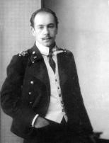
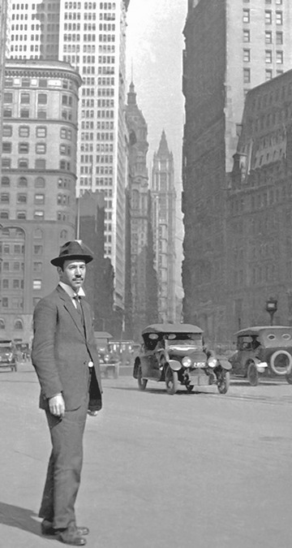

Вступ
Ігор Іванович Сікорський (25.05.1889, Київ - 26.10. 1972, Істон, Конектикут, США)- всесвітньо відомий авіаконструктор, творець гелікоптерів, увійшов у світову історію авіації як автор перших у світовій практиці авіабудування багатомоторних літаків та гелікоптерів. Ігор Іванович з’явився на світ у родині відомого психіатра, професора медичного факультету Київського університету Святого Володимира Івана Сікорського, який згодом набув скандальної репутації через свою участь в антисемітській "справі Бейліса" на боці звинувачення.
Освіта та перші кроки в авіації
Закінчив Морський кадетський корпус (1903–1906 роки) в Петербурзі та Київський політехнічний інститут (1907–1911). Навчався у Паризькій технічній школі (1906 рік). У 1908 р. студент КПІ Ігор Сікорський розробив і побудував свій перший вертоліт, який, однак, не піднявся у повітря. Тоді він почав будувати літаки. Спільно з товаришами по інституту Федором Билінкіним і Василем Йорданом побудував літаки БіС-1 і БіС-2, а згодом вже самостійно – С-3, С-4, С-5, С-6. 12 грудня 1912 року літак С-6 побив світовий рекорд швидкості – 111 км/год. У 1912–1918 роках — головний конструктор авіаційного відділу Російсько-Балтійського вагонного заводу, конструював цілу серію нових типів літаків. Під його керівництвом були побудовані перший у світі чотиримоторний літак С-21 "Гранд" (перший політ — 13 травня 1913) та чотиримоторний серійний бомбардувальник С-22 "Ілля Муромець". Літак "Ілля Муромець" вперше піднявся у повітря 10 грудня 1913 року.
Еміграція і робота в США
18 лютого 1918 року емігрував до Французької республіки (Париж), а в березні 1919 року переїхав до США. До 1923 року сталого заробітку не мав, періодично давав уроки пілотування та іноді читав лекції у середніх навчальних закладах. Все змінилося 1923 року, коли він заснував авіаційну фірму, згодом став власником конструкторсько-будівельної фірми "Sikorsky Aircraft". До 1939 року збудував близько 15 типів літаків. У 1925–1940 роках розробив серію надзвичайно успішних літаків, які принесли США престиж та рекорди. Побудований в 1934 році на замовлення Pan American World Airways гідроплан Sikorsky S-42 встановив десять світових рекордів, а 10 серійних S-42 стали першими у світі міжконтинентальними пасажирськими лайнерами, які забезпечили регулярні рейси через Атлантичний і Тихий океани. З 1939 року перейшов на конструювання гелікоптерів одногвинтової схеми. Першим почав будувати турбінні гелікоптери, гелікоптери-амфібії. 1939 року здійснив перший політ спроектований ним гелікоптер VS-300. З 1943 року його фірма стала провідним виробником вертолітної техніки за кордоном. Гелікоптери Сікорського марки "S" 1941 року були прийняті на озброєння Збройними силами США. У цілому фірма Сікорського — "Sikorsky Aircraft" створила 17 базових літаків та 18 гелікоптерів. З придбанням ліцензій на виробництво машин цієї марки розпочався розвиток вертольотобудування у Великій Британії та Франції. Про високу гарантію польотів на гелікоптерах Ігора Сікорського свідчать факти постійного використання їх президентами США як VIP-транспортних засобів. На гелікоптерах Сікорського Sikorsky S-61 вперше здійснено переліт через Атлантику (S-61; 1967 рік) і Тихий океан (S-61; 1970 рік; з дозаправкою у повітрі).
Останні роки життя та спадщина
Ігор Сікорський помер 26 жовтня 1972 року в місті Істон (штат Коннектикут, США). Похований на цвинтарі Святого Івана Хрестителя в місті Стратфорд у тому ж штаті. В Києві на честь Сікорського названо вулицю та міжнародний аеропорт в Жулянах, його ім’я 2016 року присвоєно Національному технічному університету України "Київський політехнічний інститут".